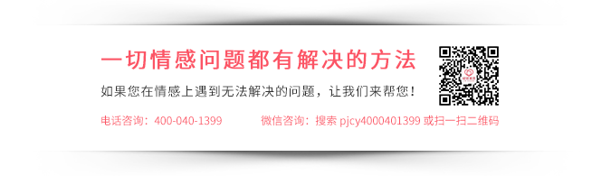

很多人面对恋人甩手而去，对你毫不留恋，就六神无主，只会哭、消沉，做些极端的事情想引起他的注意，测试他对你是否真的断情。这些不可取的做法是你挽回前任路上的障碍物，如果你认为可行，那么你的挽回基本没希望。
要想挽回一个人，想引起他注意你的办法实在太多，但那些都是被骚扰性质的注意。真正令他对你是异性吸引的留意起来，你还需好好思考方法。而下面这几个步骤，就能让你更成功地挽回他。
一、找出被分手的原因。这一步十分重要，能让你清楚知道自己为什么被分手。如果你相信他说的彼此不适合才分手，那你就一直找不到挽回的出口。就算是彼此不合适，也肯定会有明显的点来支撑这个“不合适”，而这个点到底是你爱发脾气，不愿听别人建议，还是你生活习惯差，他非常反感，也还是来自其他方面的原因呢，你要仔细分析出来。
二、调整心态。即使你还有多爱她，多舍不得她，你也必须要接受已经分手的事实，不要自欺欺人，还活在过去的回忆当中。生活是要向前看的，人也要向前活着。努力使自己的心态转变过来，你可以参加一些积极有正能量的活动，释放自己分手后的坏情绪，让自己融入阳光乐观的生活当中，才能平淡地看待已过去的恋情。
三、改造自己。经过失败的感情后，你需要做全新的自己。换一个样貌面对生活，换一种姿态面对自己。从外，让自己变得更能给人留下第一眼好印象；从内，使自己更增添一份魅力。做你喜欢的事，挑战你从未有过的体验，享受当下每一刻，使自己更加优质，在面对未来的感情问题时更善于化解。要为未来美好的感情而活，更要为自己而活。
四、实施二次吸引。当你以全新面目过好每一天，其实你已成功一大步。你可以不留痕迹地展示你自己，测试他对你的关注度和好感。假如他对全新的你没有反应，不着急，继续提升自己，增强实力，强化你的吸引力。等她有反应的时候，你就可以主动出击，进一步拉近你俩的关系。但是，最重要的一点的不能暴露你比他还高需求，要把局面扭转过来，只能让他被你深深吸引着，那么挽回的主动权就握在你的手中。
挽回之中，改变是最关键的一点，挽回爱情专家康纳说过：只有你改变了自己，以全新的面貌主动疏远对方，让对方被动地接受你的改变，以此让你获得进可攻退可守的主动权。所以，各位挽回者，不要再留恋你的旧样子，请适时改变。
